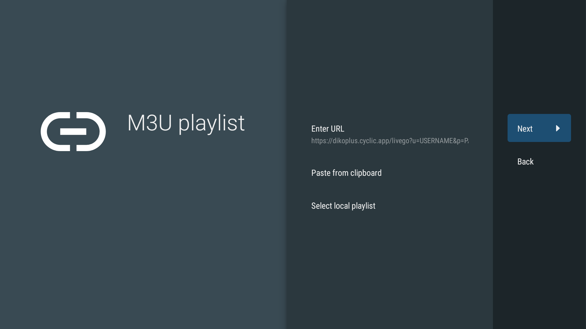
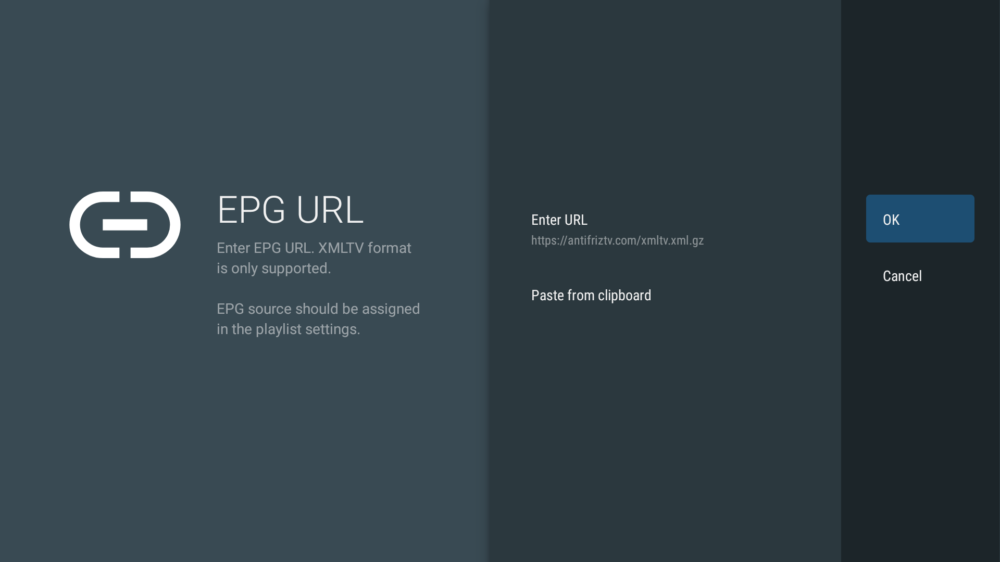

זה א שירות IPTV חינמי! כדי להשתמש בשירות זה אתם עדיין נדרשים לרכוש את השירות מאחד מספקי השירות המומלצים בקבוצה!
לאחר רכישת אחד מהשירותים, הכלי הזה נועד על מנת לשפר את חווית המשתמש בשירותים הללו. כפי שניתן לראות בדוגמא בסרטון מעל, שימוש בכלי הזה מוסיף פלייליסט נוסף לנגן ה-IPTV שלכם עם ערוצי ישראל מסודרים בקבוצות, עם כל הלוגואים המעודכנים, עם השמות ערוצים הנכונים ובעברית ועם לוח שידורים מלא ומדוייק.
השירות הזה הינו כולו נכתב בקוד פתוח. הינכם מוזמנים לבחון את הקוד בעצמכם, אם תרצו בכך, כדי לראות שאנחנו לא שומרי אף פרט אישי במערכת, אלא רק מספקים את הקישורים המתאימים לפלייליסט.
הינכם נדרשים להוסיף את הפלייליסט לנגן שלכם פעם אחת בלבד. מתעדכנת באופן אוטומטי, גם בקישור הערוצים וגם בלוח השידורים.
לצערי, אין כרגע ספק לוח שידורים אחד שהינו יציב ומקיף את כל הערוצים. אני הצלחתי לייצר פלייליסט שכולל כמעט את כל הערוצים עם ספק לוח שידורים אלקטרוני אחד. קיימת אפשרות להוסיף יותר מספק לוח שידורים אחד על מנת לקבל לוח כמעט מלא לחלוטין. אפשרות זאת נתמכת על ידי מגוון נגנים,כגון; טיוימייט, טלויזו ו-IPTV Pro. אני עדיין עובד אם ספק לוח השידורים כדי להכיל את הכל ברשימה אחת.
הוראות שימוש באשף
שלך IPTV-בחר את נגן ה
שימו לב! התוכן פה מוצג תחת ההנחה שקניתם את גרסת הפרימיום של טיוימייט. הגרסה הפרוצה אונליין היא מאד ישנה ואיננה תומכת בכל האופציות המוצגות פה.
עקבו אחר הצעדים הבאים:
שלב א׳: במידה ועדיין לא ביצעתם זאת, הוסיפו את השירות שרכשתם באופן רגיל, ללא קשר לפלייליסט הזה. השירות נותן לכם גישה לכל התכנים הנוספים של השירות שרכשתם. אם כבר ביצעתם את השלב הזה בעבר, אתם יכולים לדלג לשלב ב׳.
לחצו על Add playlist
בחרו את האופציה Xtream Codes
הקלידו את הנתונים שניתנו לכם מספק השירות, כולל את כתובת השרת, שם המשתמש והסיסמה. שימו לב שבתמונה רואים דוגמה של שירות לייבגו. הקפידו להשתמש בפרטי השירות שלכם.
המערכת תזהה ותנתח את פרטי השירות במשך כמה שניות ואז תציג את כל הערוצים והתוכן ה-VOD שקיים בשירות. במידה וקיבלתם שגיאה, אנא חזרו אחרוה צעד אחד ובידקו את נכונות הפרטים שסיפקתם בשלב הקודם. אתם יכולים ללחוץ על שם הפלייליסט ולשנות אותו אם תרצו.
לאחר מספר שניות המערכת תסיים את ההוספה של השירות. אתם יכולים, לדוגמא, לפנות לעבר קטגוריית העברית של השירות על מנת לראות את מה שמסופק כברירת מחדל על ידי השירות.
שלב ב׳: הגדרת שירות DikoPlus המותאם אישית על מכשיר הסטרימר.
הקלידו את הכתובת שהכנתם מהשלב הקודם. הדוגמה בתמונה מראה שימוש בשירות לייבגו.

המערכת תנתח את הקובץ ובסוף התהליך תציג שזיהתה את הערוצים. הקישו על Next.
קובץ מספק באופן אוטומטי את הקישור לקובץ לוח השידורים. לחצו על Done.
במסך הבא תוכלו לראות שהפלייליסט נוסף למערכת.
לחצו על לחצן האחורה פעם אחת בשלט ובחרו באופציית EPG בהגדרות.
לחצו על האופצייה העליונה EPG sources > Add source.
לחצו על Enter URL והקלידו את הכתובת https://antifriztv.com/xmltv.xml.gz ולחצו על OK.

לחצו אחורה פעם אחת בשלט וודאו ששני הפרמטרים של Update on app start ו-Update on playlists change מסומנים למצב פעיל.
לחצו אחורה בשלט פעם אחת והיכנסו לאופציית Playlists ולחצו על DikoPlus כדי להיכנס לתוך הגדרות הפלייליסט. לאחר מכן לחצו על אופציית EPG sources.
בתחתית הרשימה תראו את antifriztv.com, הפעילו את השירות כדי להוסיף אותו לפלייליסט.
חזרו חזרה למסך הראשי ותגללו בקטגוריות הערוצים כדי להגיע לרשימת DikoPlus. כאן תוכלו לראות עכשיו את הפלייליסט המותאם אישית עם כל הערוצים ולוח שידורים כמעט מלא לחלוטין.
עקבו אחר הצעדים הבאים:
שימו לב! אם אתם רק צריכים לעדכן את הקובץ לגרסא חדשה, אתם יכולים לדלג על שלב א׳ של הוספת שירות דאטו/לייבגו. חשוב ביותר למחוק את הפלייליסט לפני שאתם טוענים את הקובץ מחדש.
שלב א׳: הוסיפו את שירות דאטו/לייבגו באופן רגיל, ללא קשר לפלייליסט הזה. השירות נותן לכם גישה לכל התכנים הנוספים של שירות זה.
לחץ על Create playlist. במידה וקיבלתם הודעה שזהו נגן בלבד ואינו מכיל תוכן, תאשרו.
בחרו את האופציה New Xtream Codes playlist.
הקלידו את הנתונים שניתנו לכם מספק השירות, כולל שם לפלייליסט, את כתובת השרת, שם המשתמש והסיסמה. בסיום, לחצו על האישור בפינה הימנית העליונה. במידה וקיבלתם הודעת אזהרה שטלויזו איננה אחראית לתוכן הפלייליסט, תאשרו.
המערכת תזהה ותנתח את פרטי השירות במשך כמה שניות ואז תציג את כל הערוצים והתוכן ה-VOD שקיים בשירות. במידה וקיבלתם שגיאה, אנא חזרו אחרוה צעד אחד ובידקו את נכונות הפרטים שסיפקתם בשלב הקודם.
לאחר מספר שניות המערכת תסיים את ההוספה של השירות. אתם יכולים, לדוגמא, לפנות לעבר קטגוריית Hebrew לראות את מה שמסופק כברירת מחדל על ידי השירות. טיפ קטן, בפינה הימנית העליונה אתם יכולים לשנות את אופן התצוגה בהתאם לבחירתכם האישית.
שלב ב׳: העברת הקובץ מהמחשב למכשיר הסטרימר ניתנת לביצוע בכמה דרכים. אני אפרט פה את אחת מהן. אתם מוזמנים לבצע זאת באיזו דרך שתרצו.
לחצו על New וספק את הפרטים הבאים: Description - שם פשוט עבור הסטרימר, Address - כתובת ה-IP של הסטרימר שלכם, Pull folder - הפנו את האפליקציה לעבר תיקיית ההורדות שלכם.
לחצו על Connect. שימו לב שבפעם הראשונה שתנסו זאת תקבלו הודעת שגיאת התחברות! על מסך הטלויזיה שלכם אשרו את ניסיון ההתחברות כדי לאפשר זאת ונסו שוב להתחבר לסטרימר.
לחצו על File manager, כאן תראו את מערכת הקבצים של מכשיר הסטרימר שלכם. בצד שמאל של המסך שנפתח, הקליקו פעמיים על תיקיית Download כדי לפתוח אותה.
לחצו על Push, בחלון שנפתח חפשו את הקובץ DikoPlus.m3u שיצרתם קודם באמצעות אשץ זה ולחצו על Choose כדי להעביר את הקובץ למכשיר הסטרימר.
בשלב זה ניתן להתנתק ממכשיר הסטרימר. סגרו את חלון ה-File manager ולחצו על כפתור ה-Disconnect. אתם יכולים לסגור את האפליקציה במחשב לפנות חזרה למכשיר הסטרימר כדי להמשיך.
שלב ג׳: התקנת הקובץ המותאם אישית על מכשיר הסטרימר.
במסך הראשי של טלויזו, היכנסו להגדרות בפינה בימנית העליונה. בחרו באופציה הראשונה כדי להיכנס להגדרות ה-Playlists.
לחצו על סימן הפלוס בפינה בימנית העליונה כדי להוסיף פלייליסט נוסף. לאחר מכן, בחרו באופציה New M3U playlist.
ספקו שם לפלייליסט. אני אשתמש ב-DikoPlus למטרת ההדגמה. בחרו את האופציה Or attach a file. אם תקבלו בקשה לאשר גישה למערכת הקבצים, אנא אשרו אותר.
בחרו באופצייה Open file manager. אם תקבלו בקשה לאשר גישה למערכת הקבצים, אנא אשרו אותה. חשוב לציין באתם צריכים לוודא שמותקנת לכם אפליקציית ניהול מערכת הקבצים כדי לזה יפעל נכונה. במקרה שלי אני משתמש ב-+File Manager אבל כל אפליקצייה תואמת תעבוד.
נווטו לתיקיית Download ובחרו בקובץ DikoPlus.m3u.
לחצו לאישור ההוספה בפינה הימנית העליונה של המסך.
על המסך תוכלו לראות את שני הפלייליסטים עכשיו. לחצו אחורה פעם אחת בשלט והיכסו להגדרות ה-Program guide.
בפינה הימנית העליונה הקישו על סימן הפלוס כדי להוסיף עוד מקור לוח שידורים נוסף. ספקו אם השם Antifriz ואת הקישור https://antifriztv.com/xmltv.xml.gz. לחצו על אישור בסיום בפינה הימנית העליונה.
שימו לב שעדכון לוח השידורים לוקח כמה דקות, אז לא להיבהל אם אתם לא רואים את הערוצים מעודכנים מיד. חזרו חזרה למסך הראשי של טלויזו ובחרו לעבור לפלייליסט DikoPlus מהתפריט העליון.
הגדרות כלליות:
כיוון שקיימים מספר רב של סוגי נגנים, אינני יכול לנסות את כולם. להלן מספר כללים עקרוניים.
במידה והנגן שלכם לא תומך בקובץ מקומי או שלא ניתן להעביר את הקובץ למכשיר הסטרימר, העלו את הקובץ שנוצר לשירות ענן כלשהו, כגון: Google Drive, Dropbox, OneDrive, תייצרו קישור שיתוף עבור הקובץ ותשתמשו בקישור כדי לספק את מיקום הקובץ בנגן.
חשוב לציין שהקישור שנוצר צריך לתמוך בהורדה של הקובץ ולא רק צפייה! תבצעו חיפוש אונליין כדי לוודא אילו שינויים צריכים לבצע עם שירות הענן שלכם כדי לתמוך בזאת.
במידה והנגן לא יודע כיצד למשוך באופן אוטומטי את לוח השידורים, ספקו לו באופן ידני בהגדרות את הקישור הבא: http://bit.ly/iptv-diko.
במידה והנגן תומך ביכולת לספק יותר מלוח שידורים אחד, הוסיפו ספק נוסף עם הקישור הבא: https://antifriztv.com/xmltv.xml.gz.
!שאלות ותשובות נפוצות
רוב הספקים אינם מספקים לוח שידורים מסודר עבור הערוצים הישראלים ואפילו לא לוגואים לרוב הערוצים. מטרת המדריך הזה היא לאפשר חווית משתמש דומה ככל האפשר לחבילת כבלים מלאה
ספק השירות לעיתים מוסיף ערוצים שאינם שייכים למדינה הרלוונטית. בפלייליסט אני דואג לנקות אותם מהרשימה
מכיוון שצריכים לספק מספר כתובות שבמקור הן מאד ארוכות, יצרתי קישורים מקוצרים כדי לחסוך הקלדות ארוכות עם השלט
מכיוון שאלו אנשים פרטיים שתורמים מזמנם הפרטי ולוקח זמן לייצר זאת. אם זאת, אני עובד על זה
!הצהרת אי אחריות
שירות זה ניתן ללא תשלום וללא אחריות על מנת לספק חווית משתמש טובה ללקוחות שירות דאטו/לייבגו. זיכרו שאתם עדיין נדרשים לרכוש את השירות מאחד מהספקים באופן עצמאי